Urania è un racconto esperienziale dedicato alla stampa a caratteri mobili. Attraverso la scoperta dell’Antica Tipografia Portoghese, attiva dal 1891, il lettore entra in contatto con una tradizione ancora viva nel più antico laboratorio tipografico della Puglia.
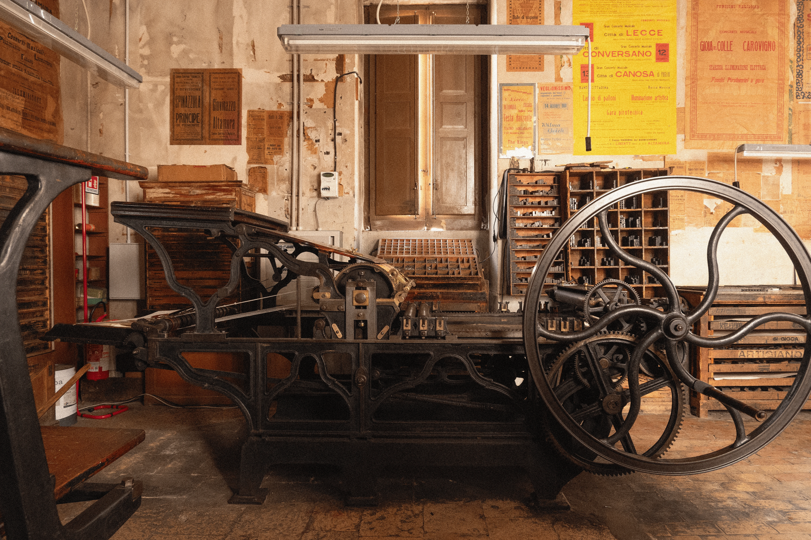
Tre capitoli che ripercorrono la stampa tipografica, nei gesti, nei processi e nei valori.
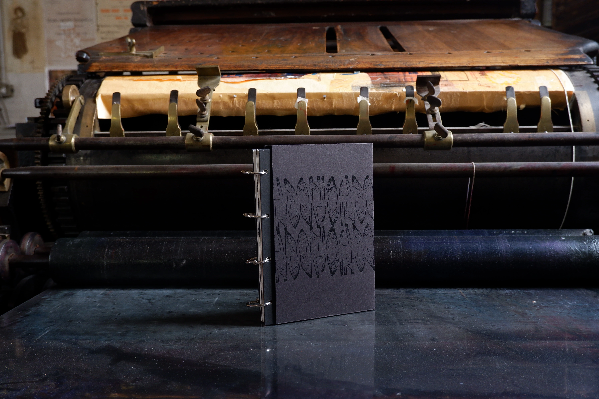
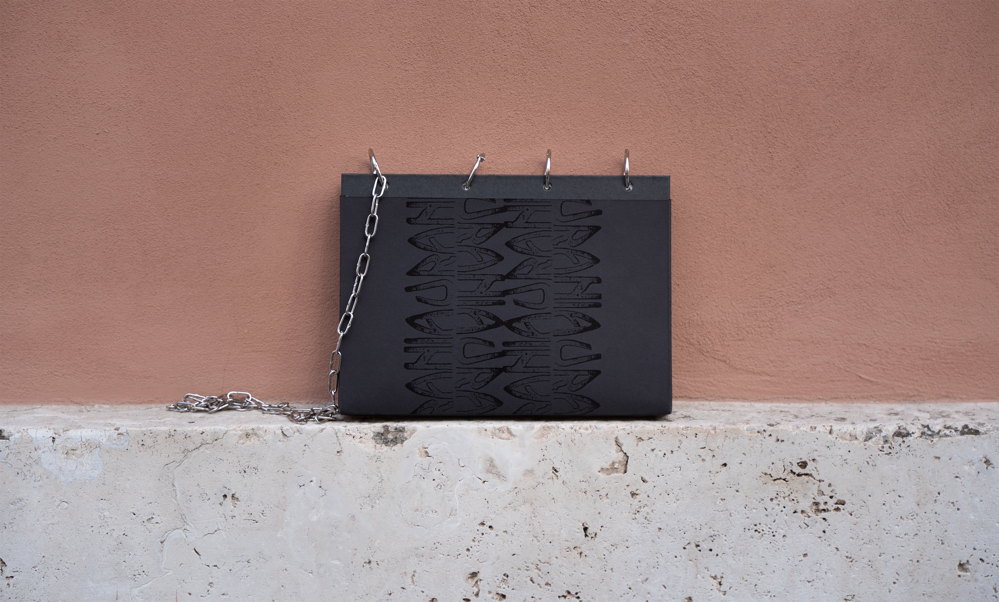
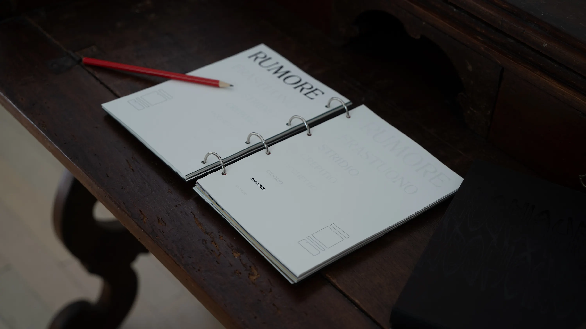
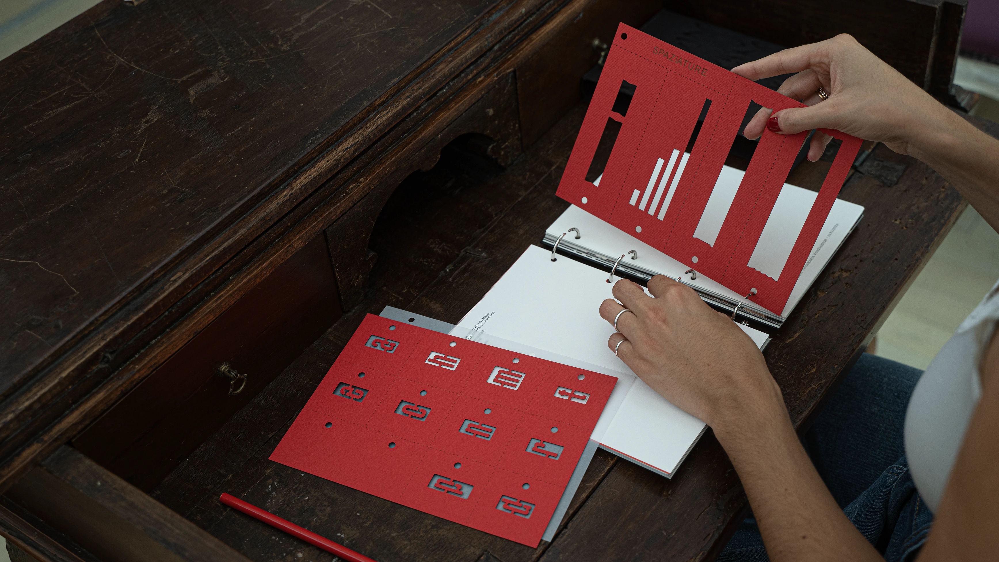
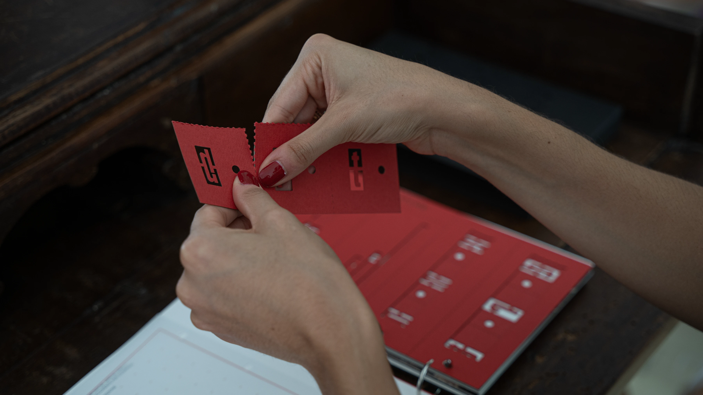
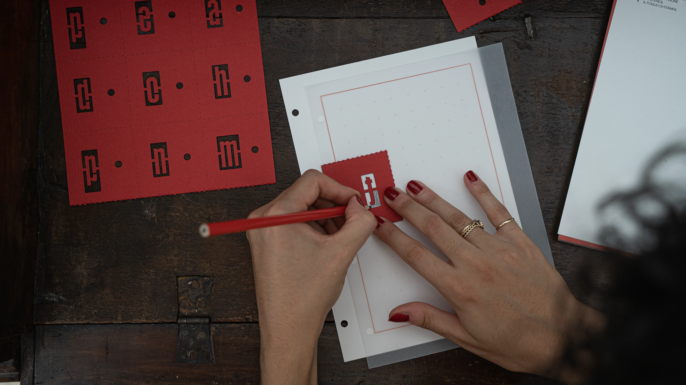
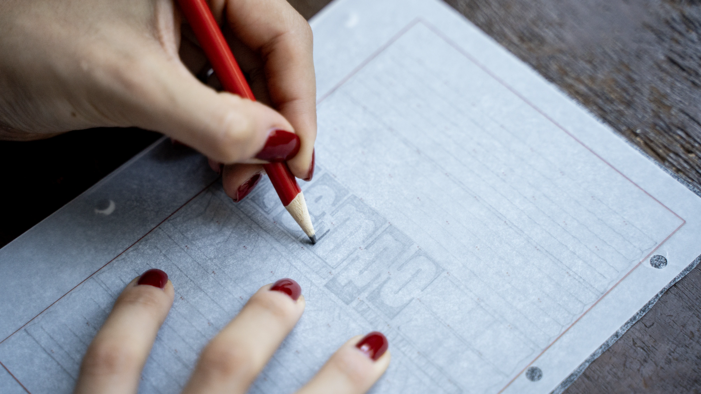
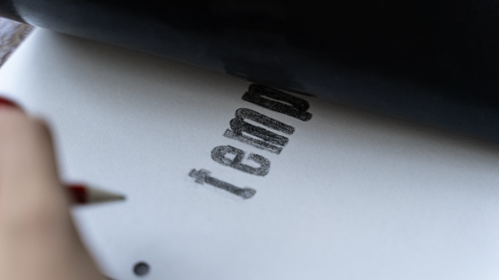
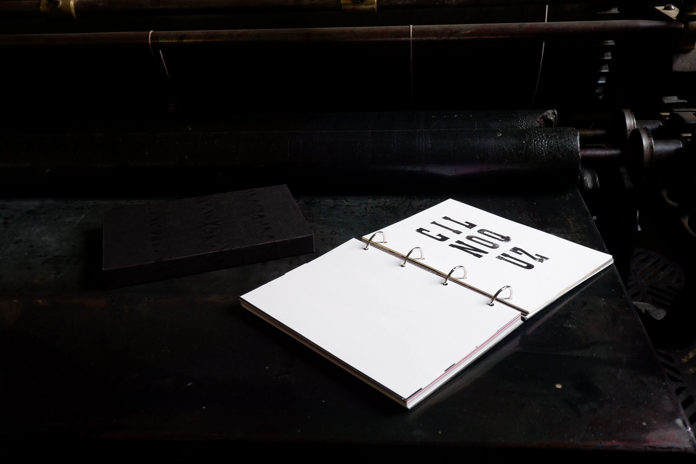
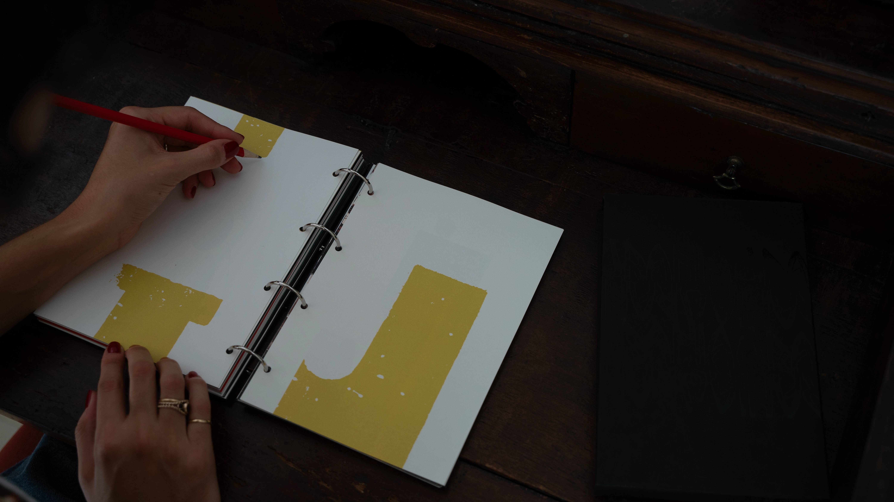
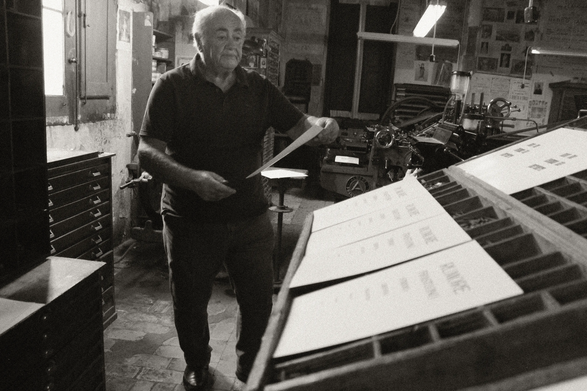